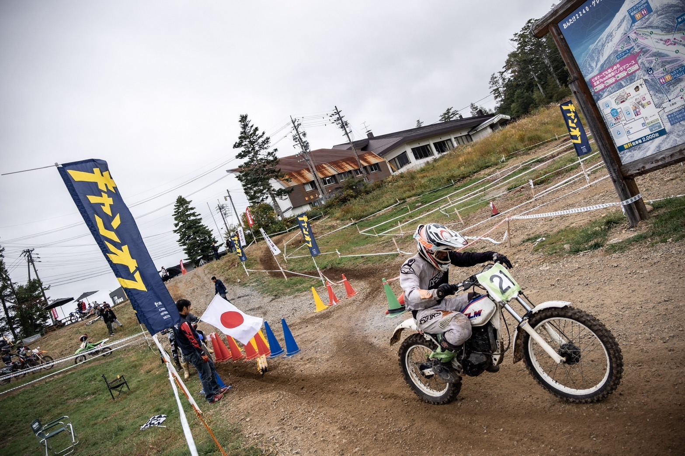

私たちはの活動では主にオフロード・オンロードやツーリングの活動をしています。
「バイクに興味がある、バイクが好き」でもバイクを持っていない方でも大歓迎です！
二輪部にはバイクが用意されていますのでもしよかったら見学に来てください！
「バイクに興味がある、バイクが好き」でもバイクを持っていない方でも大歓迎です！
二輪部にはバイクが用意されていますのでもしよかったら見学に来てください！
オフロードとは？

オフロードは主に山や舗装されていない道
をバイクで走ります！
アウトドアや冒険が好きな人たちにはもってこいです！
オンロードとは？